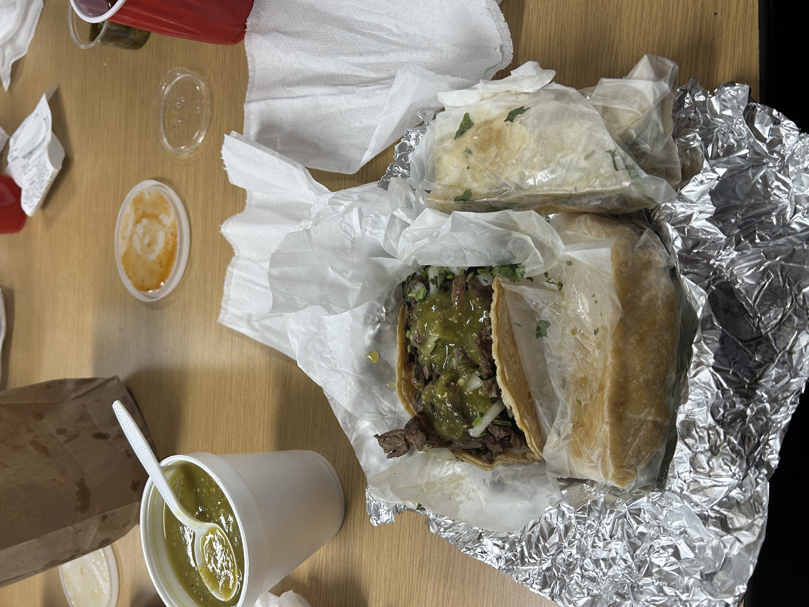
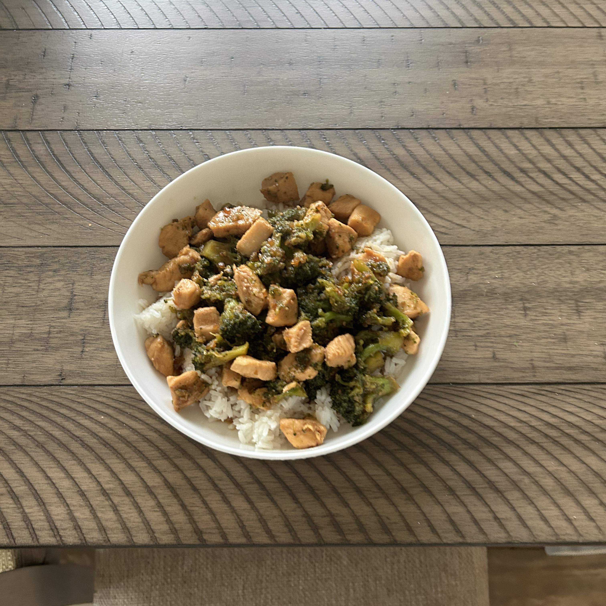

These, unlike the traditional potatoe pierogis, are filled with blueberries with a doughy outside. This makes them sweeter
and considered to be more of a desert rather than dinner dish. But in my house it is most defitenly a dinner dish.
What makes them even better is that these pierogis are homemade using my grandma's recipe.

Steak Tacos
These are Steak tacos with just cliantro, onion, and salsa verde the best toppings for a steak taco in my opinion.
These tacos are from Zaco tacos in chicago, it is by far my favorite place to get tacos from. I also enjoy making tacos at home.

Stir-fry
Stir-fry in this case was made by using chicken, you can also use steak.
I made this stir-fry using chicken and broclli thne I put it on top of rice.
This is one of my favorite meals to make becasue it is so quick and easy and particularly yummy.